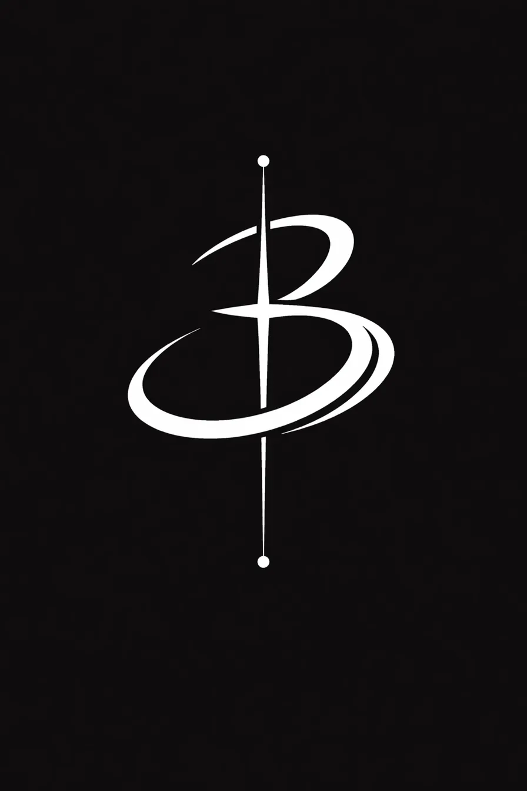

Status
This .com layer acts as the public-facing membrane: an entry point into the project, its tone, and its first outward emissions.
Universe under construction. A visible membrane for signals, images, and early structures that are still forming, but already transmitting.

This .com layer acts as the public-facing membrane: an entry point into the project, its tone, and its first outward emissions.